Marrow Sea
A single voyage across a hostile archipelago, sailed under one of six flags. The ship is not a sprite: it is a hull, a sail, a mast, a flag, a gun line and a crew, each drawn and destroyed separately. Pick a flag to see who you would be sailing as.
Ship
Every hull, sail, flag and gun is a separate sprite. The ship you sail is assembled from them at runtime, and each piece can be shot off it.
Hulls
Large and small, in four condition tints. The tint is the damage state, not a paint job.
assets/ships/hull/ · 8


Sails
Six emblems across four wear states. Emblem sets the faction, wear state sets the speed penalty.
assets/ships/sail/ · 37


Flags
One per faction. Swap it to sail under false colours.
assets/ships/flag/ · 6


Rigging
Mast and crow nest, drawn above the sail layer.
assets/ships/rig/ · 2Guns
Fixed cannon, loose cannon, mobile cannon, and the ball.
assets/ships/gun/ · 4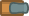
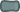
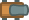
Crew
Six figures for the deck. Count on deck equals crew remaining.
assets/ships/crew/ · 6


Debris
Planks left in the water after a hull breaks up.
assets/ships/debris/ · 4


Reference ships
Kenney's own assemblies. Use them to check your layer offsets, then stop using them.
assets/ships/prebuilt/ · 30


Sheets
Packed atlas and its frame coordinates.
assets/ships/ · 2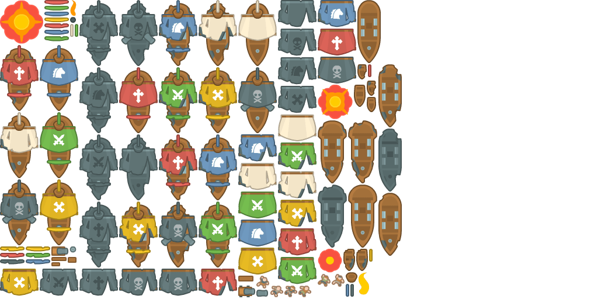
Water and land
A 64px grid. Water is the empty tile, so everything here is coastline, quay or prop.
Tiles
Sand, grass, stone quay, rock, palm, barrel and crate.
assets/world/tiles/ · 96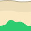
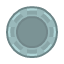
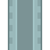
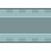
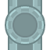
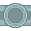
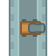
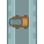
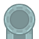
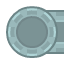
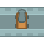
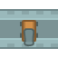
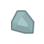
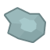
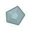
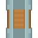
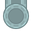
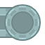
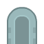
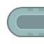
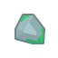
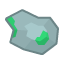
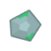
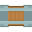
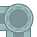
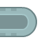
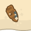
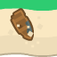
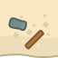
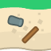
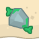
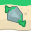
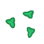
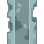
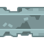
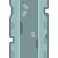
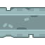
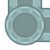
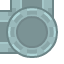
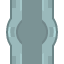
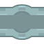
Sheets
Packed tilesheet and its grid notes.
assets/world/ · 2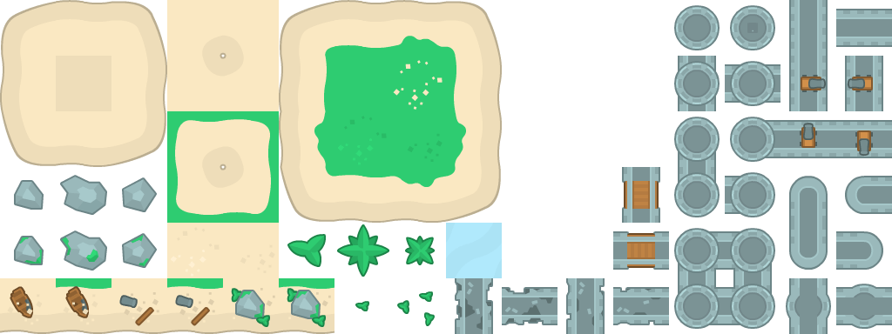
Gunnery
Muzzle flash, ball flight, hit, fire, and the ship going down.
Pirate effects
Three explosion frames and two fire frames, matched to the ship art.
assets/fx/pirate/ · 5Explosions
Flat vector bursts for a ball striking timber.
assets/fx/explosion/regular-explosion/ · 9
Simple bursts
Cheaper frames for distant hits.
assets/fx/explosion/simple-explosion/ · 9Ground bursts
For shore batteries and powder stores.
assets/fx/explosion/ground-explosion/ · 9Burst particles
Individual shards to scatter from an explosion.
assets/fx/explosion/particles/ · 17
Particle textures
Greyscale. Tint at runtime: grey for powder smoke, white for wake, orange for fire.
assets/fx/particles/ · 42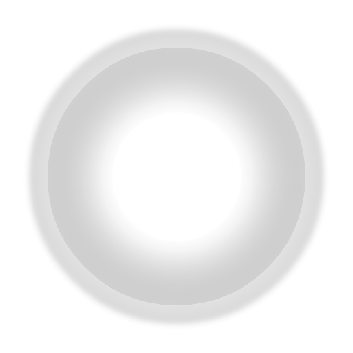
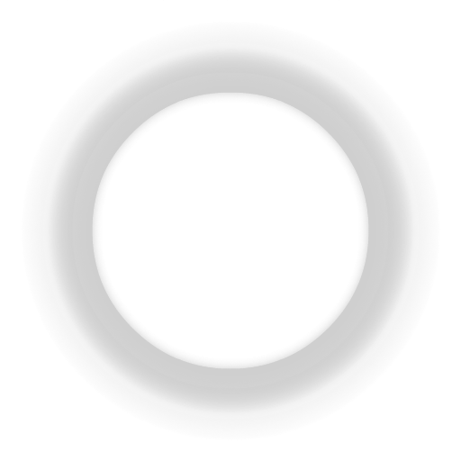


The chart
The navigation screen. Line art on parchment, drawn as though the captain kept it.
Parchment
Four 1024px sheets. Tile or crop for the chart background.
assets/chart/paper/ · 4Chart markers
Islands, ports, wrecks, hazards and route arrows.
assets/chart/icons/ · 49Instruments
Everything drawn over the sea.
Panels and gauges
9-patch panels, progress bars, compass ring and map markers.
assets/ui/ · 63Reticles
Aim, lock, range rings and the miss marker.
assets/cursors/ · 8Key prompts
Steering on the keyboard, guns on the mouse.
assets/prompts/ · 22Typefaces
Kenney Future for the interface, Kenney Pixel for the log.
assets/fonts/ · 6Sound
Forty-eight clips, all .ogg.
Cannon
Pitch these down. They are science-fiction explosions doing an honest day's work.
audio/cannon/ · 7Impacts
Ball into timber, plus the ship's bell.
audio/impact/ · 6Water
Splashes, flooding, and the sound of going under.
audio/water/ · 5Rigging and deck
Canvas, creak, footfall.
audio/rig/ · 10Boarding
Cutlass work.
audio/boarding/ · 4Port
Coins and paper.
audio/port/ · 4Interface
Clicks and confirmations.
audio/ui/ · 7Music
Five loops covering calm, chase, depth and loss.
audio/music/ · 5